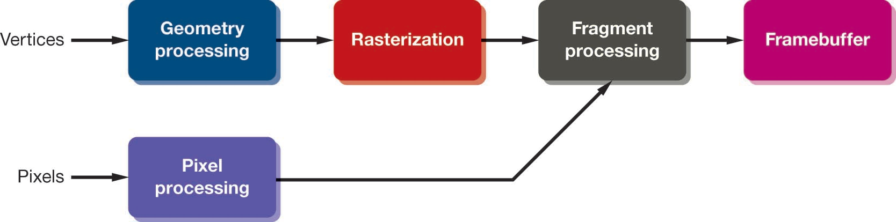
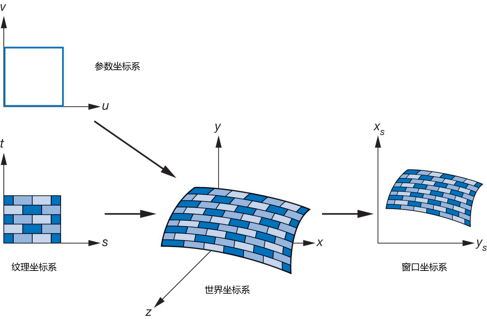
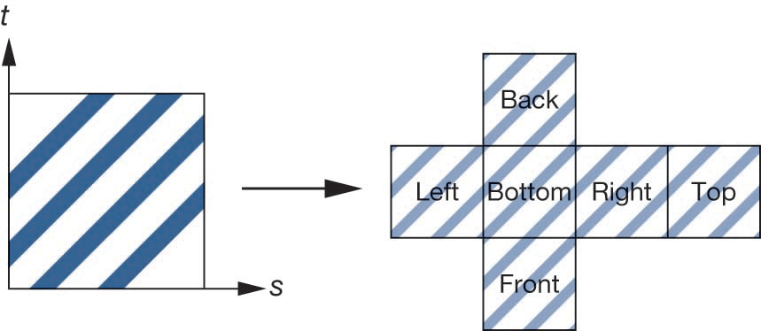
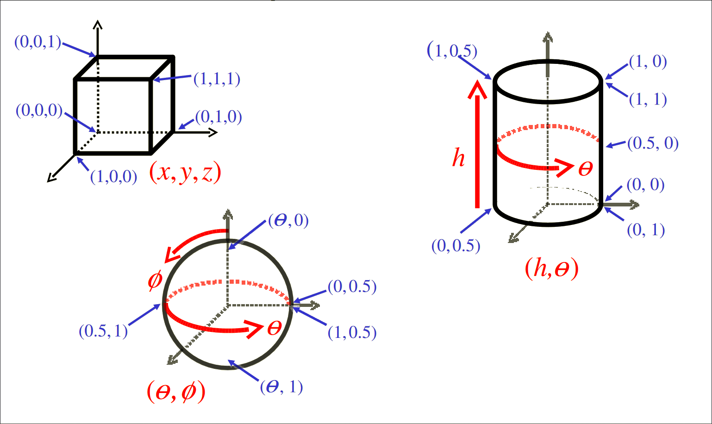

计算机图形学
第六章(2) 纹理映射
从一只“猴子”开始

Suzanne 模型(三维空间中的点)
Suzanne 的 UV 展开图(二维纹理空间)
如何画”猴子“
VBO中存储了逐顶点的属性，如位置$(x,y,z)$，法线$(nx,ny,nz)$
纹理对象是VRAM中的一块内存，存储了图像数据
要应用纹理对象，需要有另一组关键数据：UV坐标，即纹理坐标
UV坐标如何计算？
学习目标
- 理解纹理映射的基本概念和本质
- 掌握UV坐标的定义与计算方法
- 推导两种不同类型的纹理映射函数
- 分析纹理映射程序实现中存在的问题
"桔子”建模
以桔子建模为例
- 从一个球体用桔子表皮颜色着色开始
- 对球体外形进行逐步细化，使其接近桔子的真实形状
- 但存在两个问题：
- 无法完全表达桔子表面结构的特点，如各种表面的小凸起
- 用于表达小凸起会产生大量的多边形
- 拍一张桔子的照片，将其”粘“到球体上，即纹理映射(Texture Mapping)
- 如果表面还是太光滑，可以改变局部的形状，即凹凸映射(Bump Mapping)

纹理映射的概念
纹理映射，即指用于将二维的纹理图像“粘贴”到三维物体表面，使三维模型看起来更具视觉真实感。关键在于建立三维物体表面点与纹理图像上的点的对应关系，即纹理坐标
环境映射，反射贴图(Environment mapping)，用环境图片作为纹理映射，可模拟高反射表面
凹凸映射，Bump mapping，通过扰动法线向量来模拟表面细节，形成表面凹凸的效果
几何模型平滑着色

纹理映射

环境映射

凹凸映射
映射处理
纹理映射在渲染流水线的最后阶段实现，此时面片已完成了裁剪处理，因此效率很高
映射原理
纹理映射，其基本原理是将二维图像映射到三维物体表面，其实现涉及多个坐标系间的转换
纹理映射过程中涉及的坐标系包括：
- 参数坐标，用于描述物体表面曲线或曲面
- 纹理坐标，用于标识图像中用于映射的点
- 对象坐标或世界坐标，理论上是纹理映射实际发生的坐标系统
- 窗口坐标，最后实际生成图像的坐标系
映射的本质是，找到一个函数$f$，为三维模型表面上的每一个点$P(x,y,z)$，都能指定一个二维纹理图像上的对应点$T(u,v)$，即有:
$$ f(x,y,z)=(u,v) $$
拓扑学上的挑战在于，将一个封闭的三维物体的表面，在不产生任何撕裂或拉伸的情况下，完全展平成二维的矩形
纹理映射坐标系
建立映射的两种方案
- 美术工作流(Artistic)：手动“剪开”模型，定义接缝，然后像摊开兽皮一样将其展平，即UV展开(UV Unwrapping)
- 程序化计算(Procedural)：用数学公式计算映射关系
美术工作流(UV Unwrapping)
对于复杂模型，无法完全用数学公式建立映射，需要三维建模专业人员介入
- 定义接缝(Seams)，像裁缝一样，决定在哪里“剪开”三维网格
- 展开(Unwrap)，使用算法将剪开的一块块内容“孤岛”(Islands)展平到二维UV空间
- 打包(Pack)，调整这些“孤岛”的位置和大小，使它们尽可能高效地填满$[0,1]\times[0,1]$的纹理空间
计算出最终的$(u,v)$坐标后，永久存储在模型的VBO中
程序化映射(Procedural)
对于简单的几何体，可以找到映射关系，将纹理坐标上的一个点，对应到最终成像图像上的位置，该映射关系可表示成
$$ \begin{cases} x=x(s,t)\\ y=y(s,t)\\ z=z(s,t) \end{cases} $$
建立映射
求解映射问题，可以从两方面考虑：
- 正向映射(Forward Mapping)：即给定纹理图像上的一个像素，有对应的纹理坐标$(u,v)$出发，如何找到在三维空间中对应的点$(x,y,z)$
- 反向映射(Backward Mapping)：给定三维空间中的点$(x,y,z)$，如何计算出对应的纹理图像上对应点的坐标$(u,v)$，即找到映射函数，满足 $$ \begin{cases} u=u(x,y,z)\\ v=v(x,y,z) \end{cases} $$ 但一般很难直接找到这样的映射函数，为方便计算，可采用两步映射法
两步映射法
两步映射法，先将三维空间中的点$(x,y,z)$映射到参数空间$(s,t)$，再将参数空间$(s,t)$映射到纹理空间$(u,v)$，即有：
$$ \begin{cases} s=s(x,y,z)\\ t=t(x,y,z) \end{cases} $$
$$ \begin{cases} u=u(s,t)\\ v=v(s,t) \end{cases} $$
这种方法的关键在于，如何定义参数空间$(s,t)$，以及如何建立从三维空间$(x,y,z)$到参数空间$(s,t)$的映射关系。常见的参数空间定义方法有：
- 平面映射(Planar Mapping)：将参数空间定义为一个平面，适用于平面或近似平面的物体
- 立方体映射(Cubic Mapping)：将参数空间定义为一个立方体，适用于立方体或近似立方体的物体
- 球面映射(Spherical Mapping) ：将参数空间定义为一个球面，适用于球体或近似球体的物体
- 圆柱映射(Cylindrical Mapping)：将参数空间定义为一个圆柱面，适用于圆柱体或近似圆柱体的物体
映射到圆柱
假设一个圆柱半径为$r$，高度为$h$，如果用参数$(u,v)$表示圆柱体上一点，则其对应点坐标$(x,y,z)$可定义为：
$$ \begin{cases} x=r\cos{2\pi u}\\ y=vh\\ z=r\sin{2\pi u} \end{cases} $$
即完成了从图像坐标$(u,v)$到圆柱体表面一点$P(x,y,z)$的映射
再将纹理空间$(s,t)$映射到参数空间$(u,v)$，则有：
$$ \begin{cases} s=u\\ t=v \end{cases} $$
这样，就实现了从纹理空间$(s,t)$到三维空间$(x,y,z)$的映射
映射到圆柱
反向映射时，给定圆柱体上一点$P(x,y,z)$，如何计算出对应的纹理坐标$(u,v)$？
假设圆柱沿$Y$轴放置，半径为$r$，高度$h$，从$y_{min}$到$y_{max}$
目标： $f(x, y, z) = (u, v)$
1. V坐标(高度):是$y$坐标的归一化，有
$$v=\frac{y-y_{min}}{y_{max}-y_{min}}=\frac{y-y_{min}}{h}$$
2. U坐标(环绕):需要$P$点绕$Y$轴的角度 $\theta$
$$\theta = atan2(z, x)$$
3. 归一化 U: $atan2$ 返回值在 $[-\pi, \pi]$。我们需要将其映射到 $[0, 1]$。
$$u = \frac{\theta + \pi}{2\pi}$$
映射到球体
假设一个球体半径为$r$，如果用参数$(u,v)$表示球体上一点，则其对应点坐标$(x,y,z)$可定义为：
$$ \begin{cases} x=r\sin{(\pi v)}\cos{(2\pi u)}\\ y=r\sin{(\pi v)}\sin{(2\pi u)}\\ z=r\cos{(\pi v)} \end{cases} $$
即完成了从图像坐标$(u,v)$到球体表面一点$P(x,y,z)$的映射
再将纹理空间$(s,t)$映射到参数空间$(u,v)$，则有：
$$ \begin{cases} s=u\\ t=v \end{cases} $$
这样，就实现了从纹理空间$(s,t)$到三维空间$(x,y,z)$的映射。但在映射过程中，需考虑到球体存在形变。球体一般用于环境映射
映射到球体
映射到球体
反向映射时，给定球体上一点$P(x,y,z)$，如何计算出对应的纹理坐标$(u,v)$？
假设球体中心在原点，半径为$r$，需要从球面上一点$(x,y,z)$反求经度$\lambda$和纬度$\phi$
目标： $f(x, y, z) = (u, v)$
1. U坐标(经度)：与圆柱映射完全相同，是$P$点在$XOZ$平面上的投影角度，有
$$\lambda = atan2(z,x)$$ $$u=\frac{\lambda + \pi}{2\pi}$$
2. V坐标(纬度)：需要$P$点与$XOZ$平面的夹角
$$\phi=\arcsin{\frac{y}{r}}$$
3. 归一化：$\arcsin$返回值在$[-\pi/2, \pi/2]$之间，因此需要将其映射到$[-1,1]$之间
$$v=\frac{\phi + \pi/2}{\pi}$$
映射到球体的问题
用前面计算的映射函数求解，当点在北极点时，$P=(0, r, 0)$
- U坐标为，$u=(atan2(0,0)+\pi)/(2\pi)$，而$atan2(0,0)$是未定义的
- V坐标为，$v=(arcsin(r/r)+\pi/2)/\pi=(\pi/2+\pi/2)/\pi=1$，即所有的北极点都映射到纹理的顶边
在拓扑学上，在球面上，北极点是一个单独的点，但在二维纹理上，被映射成了一整条边($v=1$)，这也是地图上格陵兰岛和南极洲被无限拉伸的原因，也是球面映射的固有的缺陷

映射到立方体
也可通过简单的正投影将纹理直接映射到立方体盒子表面，可用于环境映射计算
中间形体坐标计算
从中间形体到实际形体
建立从中间形体到实际形体的映射，目标是将一般形体$M$上的点$P_M$映射到中间形体$S$上的点$P_S$，即$P_S=g(P_M)$
- 中间形体法线投影，将点$P_M$沿物体表面方向映射到其正对的中间形体表面上的点。或者，对中间形体表面上的每一个点，沿法线方向找到对应实际形体上的对应点
- 中间形体中心投影，这是最常用的方法，将$P_M$拉伸到中间形体上，方向由中间形体的中心点决定
法线投影
对实际形体$M$表面上的点$P_M$，沿其法线方向，找到与中间形体$S$表面相交的点$P_S$
- 对点$P_M$，计算其法线$N_M$
- 定义射线方程$R(t)=P_M+t N_M$
- 计算$R(t)$与中间形体$S$的交点$P_S$
- 即有$g(P_M)=P_S$
- 优点: 理论上能更“贴合”模型的凹凸细节。
- 缺点:
- 计算 $g$ 非常昂贵（需要射线-形体求交）。
- 如果 $N_M$ 不指向 $S$（例如在凹陷处），则映射失败。
- 如果 $M$ 是凹形 (concave)，多个 $P_M$ 可能映射到同一个 $P_S$。
中间形体中心投影
对实际形体$M$表面上的点$P_M$，沿中心线方向，将其投射到中间形体$S$表面上对应的点$P_S$，中心线方向由$S$决定，前面的球体推导过程正是利用了该方法
以$S$为球体为例
- 对于 $M$ 上的点 $P_M$，计算其相对于 $S$ 中心的向量 $V = P_M - S_{center}$。
- 这个 $V$ 的方向，正是$S$在其表面“对应点”的法线方向$N_S$。
- 将$P_M$沿此方向“拉”到$S$的表面，即对其归一化
- $P_S = g(P_M) = normalize(V) \cdot S_{radius} + S_{center}$
- 优点:
- 计算 $g$ 极其简单（例如，球体 $g$ 只是 $normalize(P_M)$）
- 总是能找到映射（除非 $P_M$在$S$中心）
- 缺点:
- 会产生拉伸（如地图）
- 用途:是球面映射 和 圆柱映射 的基础
纹理映射交互式Demo
课堂测试
你正在为一个场景建模。请为左侧的物体选择最合适的 纹理映射 方式：
物体
- 一面平整的砖墙
- 一根圆柱形的大理石柱子
- 一个太阳系的行星模型
映射方法
- A. 球面映射 (Spherical)
- B. 平面映射 (Planar)
- C. 柱面映射 (Cylindrical)
答案: 1 ➔ B, 2 ➔ C, 3 ➔ A
课堂总结
- 纹理映射是将二维图像“粘贴”到三维物体表面，以增强视觉真实感的技术
- 纹理坐标$(u,v)$定义了三维物体表面点与二维纹理图像点之间的对应关系
- 建立映射关系的方法包括手动UV展开和通过数学公式计算两种形式
- 常见的中间形体定义方法有平面映射、立方体映射、球面映射和圆柱映射
- 从中间形体到实际形体的映射方法包括法线投影和中间形体中心投影